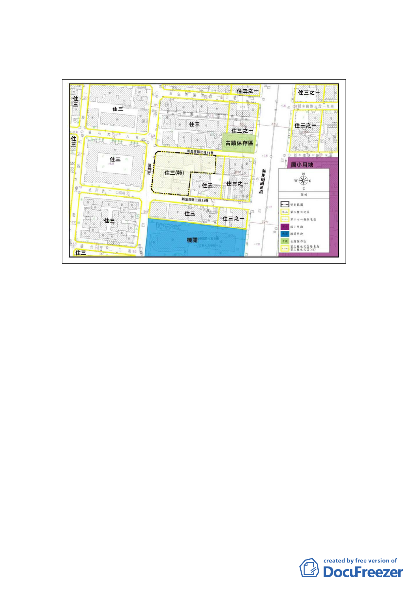

位於新生南路三段以西、新生南路三段22巷以北、溫州街以
東及新生南路三段16巷以南所圍之部份街廓，鄰近市定古蹟
紫藤廬以及公務人力發展中心，計畫面積2,143平方公尺。
二、 計畫緣起與目的：
計畫區鄰近大安森林公園及台灣大學，範圍內現況四、五層
樓戶數高達82.61％，區內建物老舊窳陋、未能與鄰近環境配
合；前於96.9.13經市府公告劃定為更新單元，但由於現況建
築容積高、改建誘因不足，導致整合困難，迄今無法順利重
建。故本案實施者依市府100年9月20日公告「修訂臺北市老
舊中低層建築社區辦理都市更新擴大協助專案計畫」，爭取
本專案相關容積獎勵，改善居住及周邊環境。
三、 原都市計畫及土地使用現況
（一） 原都市計畫：
本案屬「修訂和平東路、新生南路、羅斯福路所圍地區細
部計畫(第二次通盤檢討)暨配合修訂主要計畫案」範圍
內，使用分區為第三種住宅區，建蔽率45％，容積率225
％。
（二） 土地使用現況：
本計畫區內建物以住宅使用為主，區內計有7棟合法建築
物，包含4棟一層樓木造建築物、1棟四層樓加強磚造建築
物及2棟五層樓鋼筋混凝土造建築物，屋齡均逾30年以
-6-